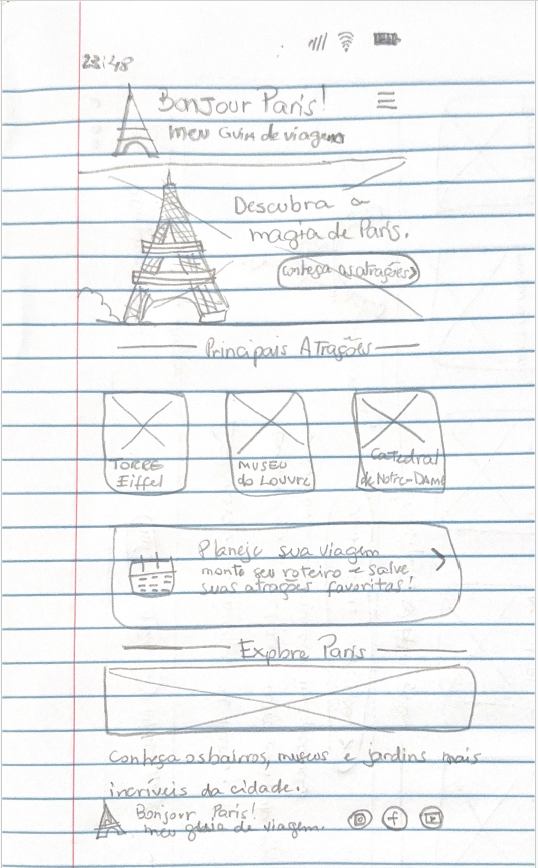
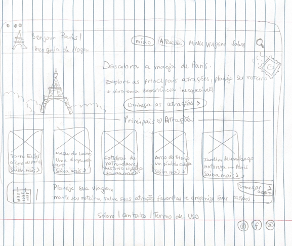

1. Página Inicial
Apresentação do guia, introdução à cidade e sugestões de atrações.
Arquivo: index.html
WDD 231 | S05 - Planejamento do Site
Meu Guia de Viagem
Michelle Barbosa Rodrigues Amorim
Bonjour Paris! — Meu Guia de Viagem
O nome "Bonjour Paris!" foi escolhido porque utiliza uma saudação francesa conhecida e representa a experiência de descobrir a cidade de Paris.
A expressão "Meu Guia de Viagem" complementa o nome e comunica de maneira clara a finalidade do site: ajudar visitantes a conhecer atrações turísticas e organizar seus passeios.
O Bonjour Paris! será um guia de viagem informativo e interativo dedicado às principais atrações turísticas de Paris, na França.
O objetivo é ajudar turistas a descobrir lugares interessantes, comparar opções de passeios e organizar uma experiência de viagem de maneira prática.
O site apresentará informações sobre monumentos, museus, jardins, bairros históricos e outros pontos turísticos, incluindo descrições, categorias, localização e sugestões de visita.
Também oferecerá recursos interativos, como filtros de atrações, visualização de detalhes, lista de favoritos e organização de passeios.
Apresentação do guia, introdução à cidade e sugestões de atrações.
Arquivo: index.html
Catálogo interativo de pelo menos 15 atrações turísticas, com filtros e detalhes adicionais.
Arquivo: atracoes.html
Página para organizar atrações favoritas, montar um roteiro e preencher um formulário de planejamento.
Arquivo: minha-viagem.html
O formulário será direcionado a uma página adicional chamada confirmacao.html, que exibirá os dados informados pelo visitante.
O público-alvo inclui turistas que desejam conhecer Paris pela primeira vez e pessoas interessadas em planejar seus próprios passeios pela cidade.
Quais são as principais atrações turísticas de Paris e o que posso conhecer durante minha primeira visita?
O site responderá a essa pergunta por meio de um catálogo de atrações com fotografias, descrições, categorias e informações de localização.
Como posso selecionar os lugares que mais gostei e organizar os passeios da minha viagem?
A página Minha Viagem permitirá que o visitante salve atrações favoritas e consulte sua lista posteriormente.
Onde posso encontrar museus, monumentos e jardins para escolher atividades de acordo com meus interesses?
A página Atrações terá filtros por categoria, permitindo localizar diferentes tipos de passeios com facilidade.
A paleta selecionada utiliza tons de rosa antigo, bege e vinho. O objetivo é transmitir elegância, acolhimento e uma identidade visual inspirada no romantismo de Paris.
#6B3F50
Cabeçalho, rodapé, títulos de destaque e navegação.
#B77B89
Detalhes decorativos, bordas e elementos de destaque.
#F5E8DF
Fundos suaves, cartões e separação de seções.
#FFF9F5
Fundo principal e áreas de leitura.
#382A30
Parágrafos e textos principais para manter boa legibilidade.
Serão utilizadas duas fontes para criar uma identidade visual elegante e manter a facilidade de leitura.
Bonjour Paris!
Será utilizada nos títulos principais e em chamadas de destaque, contribuindo para uma aparência clássica e elegante.
Descubra a magia de Paris.
Será utilizada nos parágrafos, menus, botões, formulários e demais conteúdos informativos do site.
Os wireframes representarão a organização inicial dos elementos do site Bonjour Paris! em dispositivos móveis e desktops.

